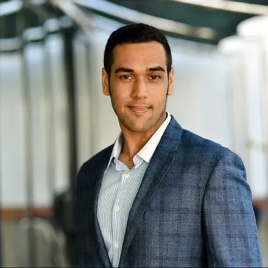

|  | Aaron Alex MBA, BMSFounder & CEO, Xela Technologies Ltd.Managing Director, Newstech India Pvt. Ltd. |
I am a creatively analytical entrepreneur, policy planner, and corporate strategist that has spent 15+ years growing and transforming companies. I have 10+ years of leadership experience that ensures I have the ability to motivate my team and mobilize people towards a common goal and shared vision. Over my career I have been responisble for launching a tech startup, advising some of Vancouver's top companies on growth and transforamation, as well as acting as MD on a $10m company board
| Year | Work Experience |
|---|---|
| 2022 - Present | Managing Director at Newstech India Pvt. Ltd. |
| 2020 - Present | Founder & CEO at Xela Technologies Ltd. |
| 2018 - 2020 | Client Services Director at Robert Half International |
| 2016 - 2018 | VP Corporate Development at Newstech India Pvt. Ltd. |
| Corporate Strategy ⭐ ⭐ ⭐ ⭐ ⭐ Corporate Governance ⭐ ⭐ ⭐ ⭐ ⭐ |
Marketing & Sales ⭐ ⭐ ⭐ ⭐ ⭐ Corporate Finance ⭐ ⭐ ⭐ ⭐ |